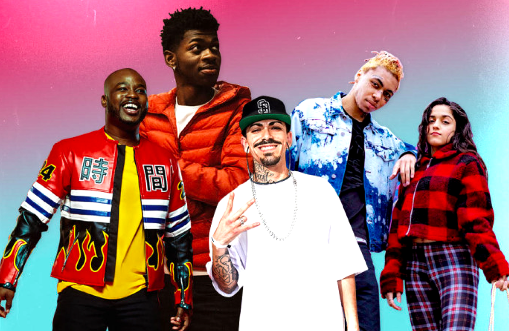
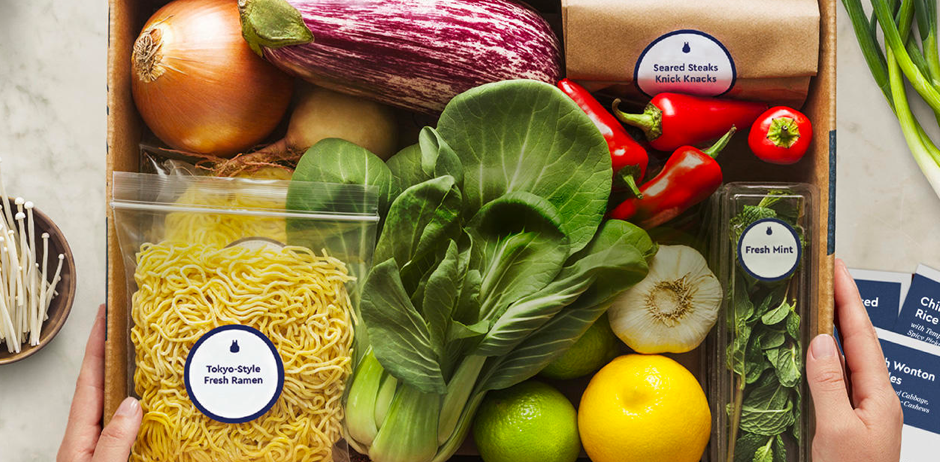

Hey, I’m Aman, a Researcher/Strategist
based in NYC.
based in NYC.
In my past life I was a Sr. Data Strategist @ Droga5, Laundry Service, and Fame House (acquired by Universal Music Group)
↳ Email
↳ Resume
↳ LinkedIn
↳ Resume
CASE STUDIES
FOUNDATIONAL RESEARCH
VIEW PROJECT →
How might Triller build a tool to help A&R’s find new talent?
VIEW PROJECT →

QUANTITATIVE RESEARCH
VIEW PROJECT →
5+ years of data strategy
in 1 case study
in 1 case study
VIEW PROJECT →
